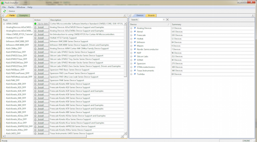

搭建ST BlueNRG开发环境
一、获取相关的软件资源
想要使用JUMA的嵌入式SDK首先需要如下这些软件资源：
1. KEIL的编译环境
ARM御用的编译器，可以从相应的KEIL官网进行相应的下载。
下载地址：
https://www.keil.com/demo/eval/arm.htm
2. 烧录工具JLink或者STLink


3. JUMA的SDK资源
JUMA SDK发布在下述地址，请选择下载最新的集成包：
http://www.juma.io/index.html#/list_summary/event
下载好后，进入ST_SDK文件夹： 
二、开始安装
Step1. 安装KEIL
1). 双击MDKxxx.exe开始安装过程。
2). 当出现如下图所示的界面后，安装过程正式开始了。
3). 直接点击上图中的next，进入下一步的安装，之后会出现如下图所示的界面：
4). 选中图中红色框中的内容表示接受KEIL的协议，然后点击next进入下一步的安装，之后会出现如下的界面：
5). 这一步需要选择的是安装的位置，以及包的位置，包就是各种芯片的配置和标准库文件等，这个位置要记住，等会的时候可能会用到。选择好后，点击next会进入到下一个界面：
6). 这里需要的是填写相关的个人信息，不过经发现，这里可以随意的填写就可以了，感谢KEIL如此（人性化）的设计。当随意或者根据自己的情况填写好信息后点击next进入到下一个界面：
7). 在这个界面中需要稍作停留了，等待一段时间后，会进行一次询问，是否需要安装KEIL的一个串行下载工具：
8). 出现上图的选择后，在juma的整个方案中，并不需要这个，所以可以选择不安装，没必要去浪费那点空间。之后经过一点点时间等等待后就会提示安装成功了。
9).出现上图的界面后安装过程就完成了，但是在从KEIL5.10之后的版本开始内部集成了包管理机制，通过这个，可以方便的对各种mcu的库文件等进行管理。我们在接下来的教程里面详细的对包管理进行描述。
Step2. KEIL安装结束的更新提示
安装完成Keil之后会有提示更新packs操作，如下：

因为是在线下载所以受限于网络，下载更新往往会出现失败的情况，如下：
因此，这里我们建议直接导入packs的方式，首先从KEIL官网下载对应的pack包，链接如下： 下载地址：http://www.keil.com/dd2/pack/ 下载对应版本的pack包，下载完成后双击.pack文件即可导入KEIL。
Step3. 以上就是KEIL的相关内容了，接下来安装JLINK与STLink
1). 下载到JLINK与STLink的安装包
2). 双击安装包文件直接我同意->NEXT->同意->Finish就完成了
3). 在设备管理中能看到相应的设备驱动，说明安装驱动成功
三、使用JUMA的SDK
JUMA在ST方向上的SDK采用是开放源码的方式。只需将源码全部下载用KEIL打开即可。
目前，源码支持的DEMO有蓝牙电灯功能，可以用于验证是否SDK运行正常。